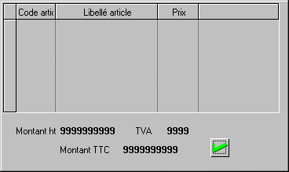
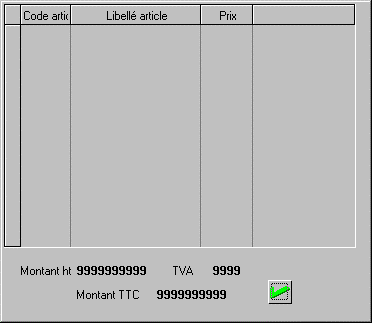

L'attachement d'une page permet de définir le comportement de celle-ci en cas d'agrandissement de la fenêtre dans laquelle elle se trouve.
La page peut soit :
Rester à la même place et ne pas changer de taille.
Se déplacer proportionnellement à la page/fenêtre.
S'étendre proportionnellement à la page/fenêtre.
Exemple
La fenêtre ci-dessous contient deux pages. La première contient uniquement le tableau, la seconde contient le pied de la facture et le bouton OK. La page de pied est déclarée comme étant attachée au bas, c'est à dire qu'elle va descendre lorsque la fenêtre sera agrandie.

Après agrandissement de la fenêtre, la page de pied se trouve décalée vers le bas.

Comment préciser les attachements d'une page ?
L'attachement d'une page se définit dans les paramètres de la page, par le choix Page courante du menu Paramètres ou par le raccourci F3. Les paramètres concernant l'attachement d'une page sont :
|
Attaché à droite |
Indique que la page peut éventuellement être déplacée vers la droite en cas d'élargissement de la page de fond. |
|
Attaché au bas |
Indique que la page peut éventuellement être déplacée vers le bas en cas d'allongement de la page de fond. |
|
Largeur variable |
Indique que la page peut être élargie en cas d'élargissement de la fenêtre de base. |
|
Hauteur variable |
Indique que la page peut être agrandie en hauteur en cas d'allongement de la fenêtre de fond. |
Attention :
Un type d'attachement défini pour une page est automatiquement répercuté à l'exécution à tous les objets contenus dans la page. Par exemple, si vous déclarez qu'une page est "Attachée en bas", tous ses objets auront cette propriété.
Lorsque vous définissez un type d'attachement pour un objet, il est impératif de définir un type d'attachement compatible pour la page contenant cet objet. Dans le cas contraire, une erreur est détectée à la compilation. Par exemple, si vous déclarez qu'un objet est "Attachée en bas", il faut aussi déclarer que la page est de "Hauteur variable" (la page peut aussi être déclarée "Attachée en bas" mais dans ce cas, il est redondant d'affecter cette propriété à l'objet - voir le paragraphe précédent).